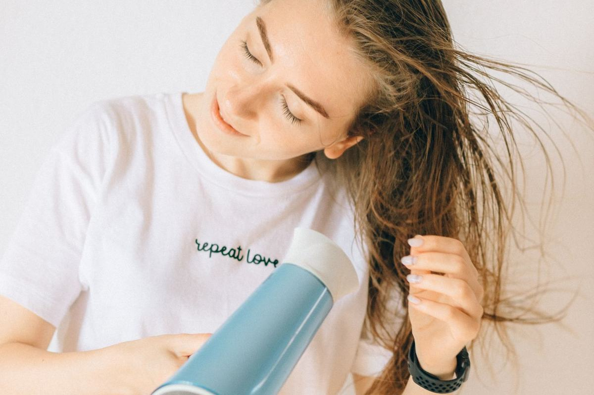

Beauty › Hair tools
Shark FlexStyle vs Dyson Airwrap: The Cheaper Air Styler
Disclosure: This post contains affiliate links. As an Amazon Associate I earn from qualifying purchases. Learn more.

Quick answer
The Dyson Airwrap i.d. lists around $649. The Shark FlexStyle HD440BK does the same dry-curl-smooth job for about $250 (it dipped to ~$200 in October 2026), and buyers often say results are comparable.
Comparison at a glance
Prices are approximate as of Nov 2026 and change often; check the retailer for the current price.
| Product | Price (approx., Nov 2026) | Size | Price/oz | Key features | Where to buy |
|---|---|---|---|---|---|
| Dyson Airwrap i.d. Multi-Styler Original | ~$649 | — | — | Coanda-airflow styler; app-connected curl settings; single reversible-airflow curler. | Shop at Dyson |
| Shark FlexStyle Air Styling & Drying System (HD440BK) Best Airwrap alternative | ~$200–250 | 5 attachments | — | Twists from dryer to styler; auto-wrap curlers, oval and paddle brushes, diffuser, concentrator. | Shop on Amazon |
| Revlon One-Step Volumizer Plus Budget blowout pick | ~$42–49 | 2.4" oval barrel | — | Hot-air brush; heat and cool settings; detachable head. | Shop on Amazon |
The original: Dyson Airwrap i.d. Multi-Styler
Reviewers praise its lighter weight, quieter motor and controls, but the price is the big barrier. Size: —.
Dyson Airwrap i.d. Multi-Styler
~$649 (approx., Nov 2026)
Buyers say: Lighter and quieter with great controls; the price is the barrier.
Shop at DysonThe dupes
1. Shark FlexStyle Air Styling & Drying System (HD440BK)
~$200–250 (approx., Nov 2026)
Buyers say: Styling results come close to the Airwrap, and it doubles as a full dryer.
Shop on AmazonWhat matches: Twists from dryer to styler; auto-wrap curlers, oval and paddle brushes, diffuser, concentrator.
Why buyers like it
- Reviewers and editors (e.g., Tom's Guide, Wirecutter) find styling results close to the Airwrap.
- Buyers love that it doubles as a full hair dryer.
- Some reviewers say curls hold longer than expected.
Watch out for
- A common complaint: loud, high-pitched noise.
- Heavier and bulkier in hand; buttons are easy to hit by accident.
- Separate left/right curlers must be swapped to change curl direction.
2. Revlon One-Step Volumizer Plus
~$42–49 (approx., Nov 2026)
Buyers say: A quick salon-style blowout for a fraction of the price.
Shop on AmazonWhat matches: Hot-air brush; heat and cool settings; detachable head.
Why buyers like it
- Buyers say it gives a salon-style blowout quickly.
- Reviewers like the price and ease of use.
Watch out for
- Blowout only; it doesn't do Airwrap-style curls.
- Runs hot; reviewers with fine or damaged hair suggest lower settings and heat protectant.
- Best for short-to-mid-length hair.
Cautions
Hot tools can damage hair and burn skin. Use a heat protectant, keep away from water, and follow the manufacturer's safety instructions.
This post is for general information only and is not medical advice.
How we chose
Picks are researched, not personally tested: we compared published specs and ingredient lists, Amazon and retailer star ratings and review counts, recurring themes in buyer reviews, and independent editorial reviews. "Buyers say" statements paraphrase common review themes; they are not quotes.
Prices and ratings checked November 1, 2026.